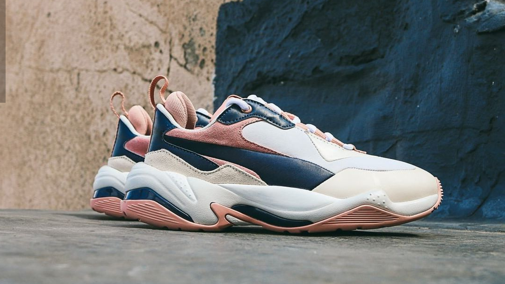

Converse

Paying homage to the past and silhouettes ahead of their time. As part of PUMA’s Co.Creative initiative, this Rive Gauche execution was created with Lama Jouni, a fashion designer based in Dubai and takes inspiration from the distinct Parisian culture found on one side of the Seine.
All sizes available